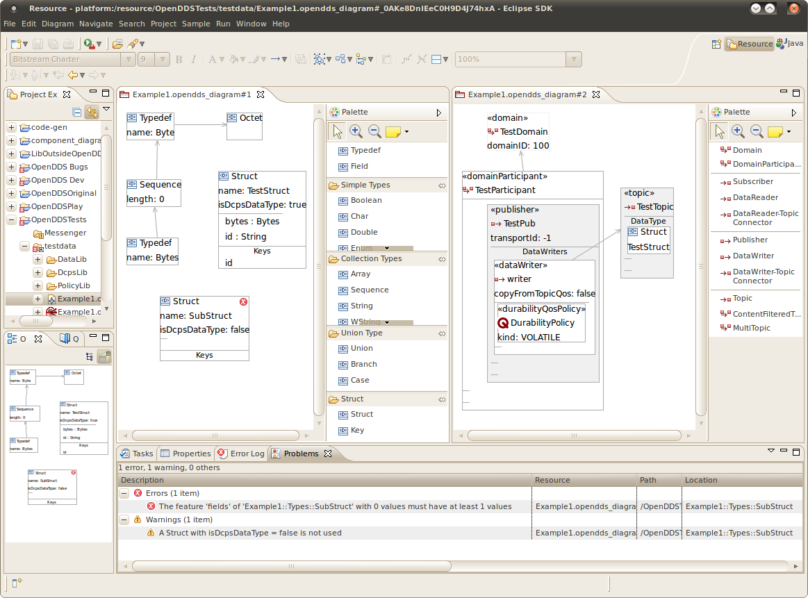

OpenDDS Modeling SDK
Graphical modeling Eclipse plug-ins are provided for constructing the OpenDDS models that will be
transformed into C++ code.
The modeling is done in one of the following diagram types:
- Main Diagram This is the entry point for the modeling and can include "libraries", which are
reusable packages. The description of the libraries follows.
- Policy Library This contains a collection of QoS Policies that typically work together
to achieve an overall QoS characteristic. For example, one policy library may have policies tuned
for reliable data transmission, while another library has policies tuned for high-performance
data transmission.
- Data Library This contains the data types used to define the structure of the data
being published.
- DCPS Library This is where topology for the publishing and subscribing entities are defined.
The elements from the other libraries, such as QoS Policies, and Structs, will be used in this
library.
![ [Click to enlarge]](../images/opendds_modeling_editors_examples.png){kind=link}